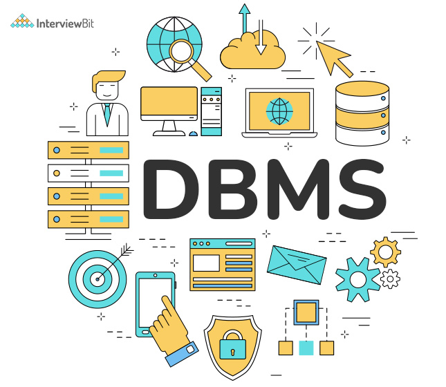

a software which works over the operating system
Digrmatic represntation of DBMS
Charles Bachman was the first person to develop the Integrated Data Store (IDS)
which was based on network data model for which he was inaugurated with the Turing
Award (The most prestigious award which is equivalent to Nobel prize in the field of
Computer Science.). It was developed in early 1960’s.
In the late 1960’s, IBM (International Business Machines Corporation) developed the Integrated Management Systems which is the standard database system used till date in many places. It was developed based on the hierarchical database model. It was during the year 1970 that the relational database model was developed by Edgar Codd. Many of the database models we use today are relational based. It was considered the standardized database model from then
to know more about click Here
credit goes to love babbar bhaiya
🤗🤗 checkout❤️❤️ Here!!👍👍